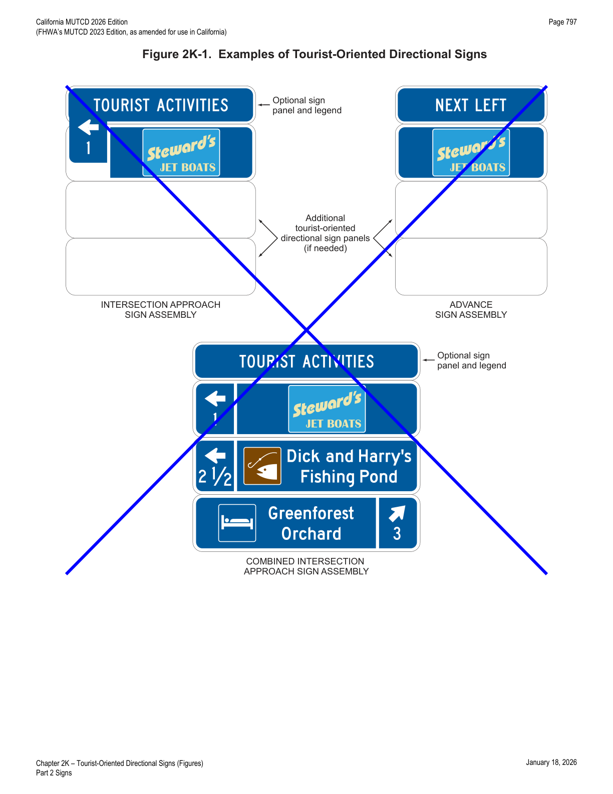
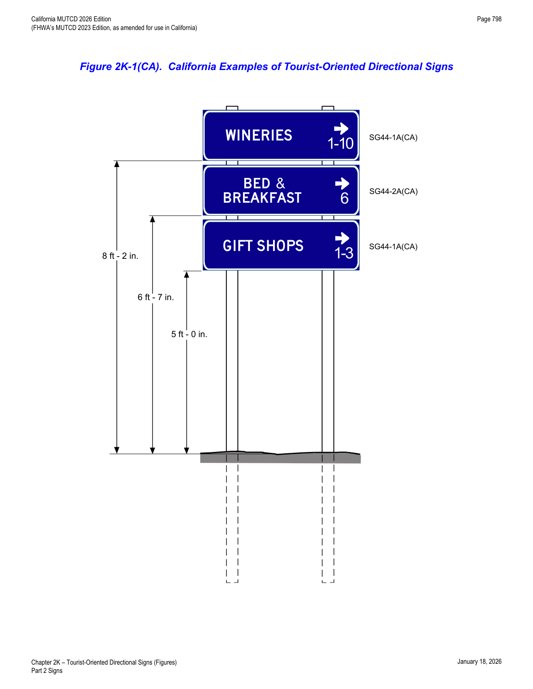
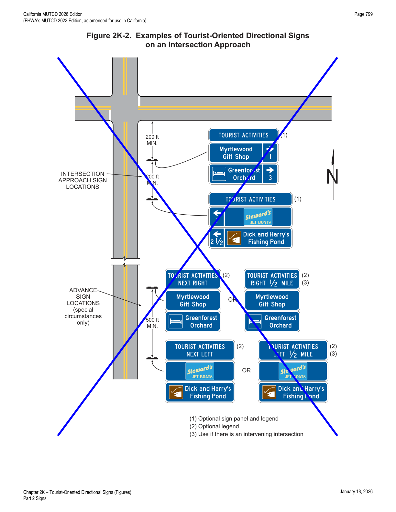

Part 2 · Signs · Chapter 2K
Tourist-Oriented Directional Signs
Covers post-mounted, generic (non-branded) directional sign assemblies used on rural highways to direct road users to tourist businesses, services, and activities not otherwise visible from the road.
2K.01Purpose and Application
Support — Background/Explanatory
- 01Tourist-oriented directional signs are post-mounted guide sign assemblies with one or more signs that display the business identification of and directional information for generic eligible business, service, and activity facilities.
Standard — Mandatory Requirement
- 02A facility shall be eligible for tourist-oriented directional signs only if it derives its major portion of income or visitors during the normal business season from road users not residing in the area of the facility.
Option — Permissive
- 03Tourist-oriented directional signs may include businesses involved with seasonal agricultural products.
Standard — Mandatory Requirement
- 04The use of tourist-oriented directional signs shall be limited to rural highways (see definition in Section 1C.02). Tourist-oriented directional signs shall not be installed on conventional roads in urban or urbanized areas or on freeway or expressway main roadways or ramps.
- 04aThe tourist-oriented information and specific service information signs shall be separate installations.
Support — Background/Explanatory
- 04bRefer to SHC, Division 1, Chapter 1.5, Article 3, § 229.285.
Option — Permissive
- 05Tourist-oriented directional signs may be used in conjunction with General Service signs (see Section 2I.02).
Support — Background/Explanatory
- 06Section 2K.07 contains information on the adoption of a State policy for States that elect to use tourist-oriented directional signs.
Standard — Mandatory Requirement
- 07Refer to SHC, Division 1, Chapter 1.5 for administration, standards, eligibility, and fees concerning the tourist-oriented directional signs.
2K.02Design
Standard — Mandatory Requirement
- 01Tourist-oriented directional sign assemblies shall have one to three signs (see Figure 2K-1 and 2K-1(CA)) for the purpose of displaying the generic business identification of and directional information for eligible facilities. Except as provided in Paragraph 7 of this Section, each sign shall be rectangular in shape and shall have a white legend and border on a blue background.
- 02The content of the legend on each sign shall be limited to the generic identification and directional information for no more than one eligible business, service, or activity facility. The legends shall not include promotional advertising or gambling activities.
Guidance — Recommended Practice
- 03Each sign should have a maximum of two lines of legend including no more than one symbol (see Paragraph 4 of this Section), a separate directional arrow, and the distance to the facility displayed beneath the arrow. Arrows pointing to the left or up should be at the extreme left of the sign panel. Arrows pointing to the right should be at the extreme right of the sign panel. Symbols, when used, should be to the left of the word legend or business identification sign panel (see Paragraphs 6 and 9 of this Section).
Option — Permissive
- 04The General Service sign symbols (see Section 2I.02) and the symbols for recreational and cultural interest area signs (see Chapter 2M) may be used on tourist-oriented directional signs.
- 05Based on engineering judgment, the hours of operation may be displayed on the sign.
- 06Business identification sign panels (see Section 2J.03) for specific businesses, services, and activities may be used in place of word legends on tourist-oriented directional signs.
Standard — Mandatory Requirement
- 06aThe tourist-oriented directional signs shall not identify particular businesses or services by name, but rather shall be generic and identify only the type or nature of the business or service available.
Support — Background/Explanatory
- 06bRefer to SHC, Division 1, Chapter 1.5, Article 3, § 229.285.
Standard — Mandatory Requirement
- 07When used, recreational and cultural interest area symbols shall be white on a brown background.
- 08When used, symbols shall be an appropriate size (see Section 2K.04).
- 09When used, business identification sign panels shall not exceed 24 inches in width and 15 inches in height. Logos resembling official traffic control devices shall not be permitted.
Option — Permissive
- 10The word message TOURIST ACTIVITIES may be displayed at the top of the tourist-oriented directional sign assembly.
Support — Background/Explanatory
- 10aThe TOURIST ACTIVITIES word message unnecessarily increases the height of the sign.
Standard — Mandatory Requirement
- 11The TOURIST ACTIVITIES word message shall have a white legend in all upper-case letters and a white border on a blue background. If used, it shall be placed above and in addition to the directional signs.
Support — Background/Explanatory
- 12Examples of tourist-oriented directional signs are shown in Figures 2K-1 and 2K-1(CA).


2K.03Style and Size of Lettering
Guidance — Recommended Practice
- 01All letters and numbers on tourist-oriented directional signs, except on the business identification sign panels, should be upper-case and at least 6 inches in height. Any legend on a business identification sign panel should be proportional to the size of the business identification sign panel.
Standard — Mandatory Requirement
- 02Design standards for letters, numerals, and spacing shall be as provided in the "Standard Highway Signs" publication (see Section 1A.05).
- 03Figure 2K-1(CA) and the Caltrans' California Sign Specifications for Tourist Oriented Directional signs shall be used for arrangement and size of tourist-oriented directional signs. A single sign arrangement is used in California for tourist-oriented directional signs.
2K.04Arrangement and Size of Signs
Standard — Mandatory Requirement
- 01The total height of the tourist-oriented directional signs in a sign assembly shall be limited to a maximum of 6 feet, excluding the mounting height, measured vertically from the bottom of the sign assembly to the elevation of the near edge of the roadway. Additional height shall be allowed to accommodate the addition of the optional TOURIST ACTIVITIES message provided in Section 2K.02 and the action messages provided in Section 2K.05.
Guidance — Recommended Practice
- 02The number of intersection approach sign assemblies (one sign assembly for tourist-oriented destinations to the left, one for destinations to the right, and one for destinations straight ahead) installed in advance of an intersection should not exceed three.
Standard — Mandatory Requirement
- 02aThe number of signs installed in each assembly shall not exceed three.
Support — Background/Explanatory
- 02bRefer to SHC, Division 1, Chapter 1.5, Article 3, § 229.28.
Guidance — Recommended Practice
- 02cThe signs for right-turn, left-turn, and straight-through destinations should be on separate sign assemblies. Signs for facilities in the straight-through direction should be considered only when there are signs for destinations in either the left or right direction.
- 03If it has been determined to be appropriate to combine the left-turn and right-turn destination signs on a single sign assembly, the left-turn destination signs should be above the right-turn destination signs (see Figure 2K-1). When there are multiple destinations in the same direction, they should be in order based on their distance from the intersection. Except as provided in Paragraph 5 of this Section, a straight-through sign should not be combined in a sign assembly displaying left-turn and/or right-turn destinations.
- 04The signs should not exceed the size necessary to accommodate two lines of legend without crowding. Symbols on a directional sign should not exceed the height of two lines of a word legend. All directional signs and other parts of the sign assembly should be the same width, which should not exceed 6 feet.
Standard — Mandatory Requirement
- 05At intersection approaches where three or fewer facilities are displayed, the left-turn, right-turn, and straight-through destination sign panels shall be combined on the same sign assembly.
- 06Figure 2K-1(CA) and the Caltrans' California Sign Specifications for Tourist Oriented Directional (SG44-1A(CA) and SG44-2A(CA)) signs shall be used for arrangement and size of tourist-oriented directional signs. A single sign arrangement is used in California for tourist-oriented directional signs.
2K.05Advance Signs
Guidance — Recommended Practice
- 01Advance signs should be limited to those situations where sight distance, intersection vehicle maneuvers, or other vehicle operating characteristics require advance notification of the destinations and their directions.
- 02The design of the advance sign should be identical to the design of the intersection approach sign. However, the directional arrows and distances to the destinations should be omitted and the action messages NEXT RIGHT, NEXT LEFT, or AHEAD should be placed on the sign above the business identification signs. The action messages should have the same letter height as the other word messages on the directional signs (see Figures 2K-1 and 2K-2).
Standard — Mandatory Requirement
- 03The action message signs shall have a white legend in all upper-case letters and a white border on a blue background.
Option — Permissive
- 04The legend RIGHT ½ MILE or LEFT ½ MILE may be used on advance sign assemblies when there are intervening minor roads.
- 05The height required to add the directional word messages recommended for the advance sign assembly may be added to the maximum sign height of 6 feet.
Guidance — Recommended Practice
- 06The optional TOURIST ACTIVITIES message, when used on an advance sign assembly, and the action message should be combined on a single sign with TOURIST ACTIVITIES as the top line and the action message as the bottom line (see Figure 2K-2).
Support — Background/Explanatory
- 07Advance signs are not used in California for tourist-oriented directional signs.
2K.06Sign Locations
Guidance — Recommended Practice
- 01If used, the intersection approach signs should be located at least 200 feet in advance of the intersection. Sign assemblies should be spaced at least 200 feet apart and at least 200 feet from other traffic control devices.
- 02If used, advance signs should be located approximately ½ mile from the intersection with 500 feet between these sign assemblies. In the direction of travel, the order of advance sign placement should be to show the destinations to the left first, then destinations to the right, and last, the destinations straight ahead (see Figure 2K-2).
Support — Background/Explanatory
- 02aAdvance signs are not used in California for tourist-oriented directional signs.
Guidance — Recommended Practice
- 03Position, height, and lateral offset of sign assemblies should be governed by Chapter 2A except as permitted in this Section.
Option — Permissive
- 04Tourist-oriented directional signs may be placed farther from the edge of the road than other traffic control signs.
Standard — Mandatory Requirement
- 05The location of other traffic control devices shall take precedence over the location of tourist-oriented directional signs.

2K.07State Policy
Standard — Mandatory Requirement
- 01To be eligible for tourist-oriented directional signing, facilities shall comply with applicable State and Federal laws concerning the provisions of public accommodations without regard to race, religion, color, age, sex, or national origin, and with laws concerning the licensing and approval of service facilities. Each State that elects to use tourist-oriented directional signs shall adopt a policy that complies with these provisions.
Guidance — Recommended Practice
- 02The State policy should include: (A) a definition of tourist-oriented business, service, and activity facilities; (B) eligibility criteria for signs for facilities; (C) provision for covering signs during off seasons for facilities operated on a seasonal basis; (D) provisions for signs to facilities that are not located on the crossroad when such facilities are eligible for signs; (E) a definition of the immediate area in compliance with Paragraph 2 of Section 2K.01; (F) maximum distances to eligible facilities — the maximum distance should be 5 miles; (G) provision for information centers (plazas) when the number of eligible sign applicants exceeds the maximum permissible number of sign panel installations; (H) provision for limiting the number of signs when there are more applicants than the maximum number of signs permitted; (I) criteria for use at intersections on expressways; (J) provisions for controlling or excluding those businesses which have illegal signs as defined by the Highway Beautification Act of 1965 (23 U.S.C. 131); (K) provisions for States to charge fees to cover the cost of signs through a permit system; (L) a definition of the conditions under which the time of operation is displayed; and (M) provisions for determining if advance signs will be permitted, and the circumstances under which they will be installed.
Option — Permissive
- 03The Tourist Oriented Directional signs may be placed at qualifying conventional rural highway intersections.
Support — Background/Explanatory
- 04These qualifying intersections are described in Chapter 1.5 of the SHC.
- 05Refer to SHC, Division 1, Chapter 1.5 for administration, standards, eligibility, and fees concerning the tourist-oriented directional signs.
| Sign or Plaque | Designation | Section | Conventional Road |
|---|---|---|---|
| Tourist-Oriented Directional Sign (TODS) | SG44-1A(CA) | 2K.04 | VARS x 18 |
| Tourist-Oriented Directional Sign (TODS) | SG44-2A(CA) | 2K.04 | VARS x 18 |
★ Key Takeaways — Chapter 2K
- Tourist-oriented directional signs (TODS) are limited to rural highways only — never on urban conventional roads, and never on freeway/expressway main roadways or ramps.
- Signs are strictly generic: they identify the type of business/service/activity, never a specific business name or brand.
- A sign assembly is capped at 3 signs and 6 feet total height (excluding mounting height); each sign panel is limited to 2 lines of legend, one symbol, an arrow, and distance.
- California uses a single standardized sign arrangement (SG44-1A(CA) and SG44-2A(CA)) per Caltrans' California Sign Specifications, and does not use advance TODS signs at all — only intersection approach assemblies.
- State policy must cap eligible-facility distance at a maximum of 5 miles and address seasonal coverage, fee permitting, and illegal-sign exclusion under the Highway Beautification Act of 1965.